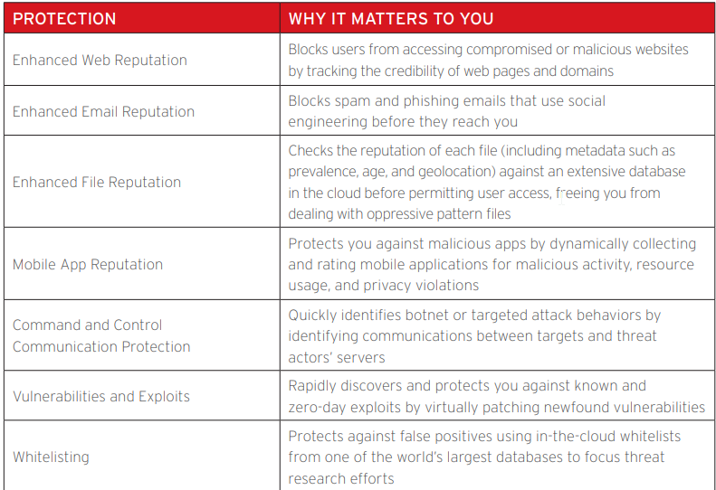

Trend Micro™ SMART PROTECTION NETWORK
Identify new threats in real tiime
Collecting data
See reputation
Combination with big data and analysis (automated)
- Custom made/ unique code/ encryption/ packing
The Smart Protection Network works in three distinct areas: collection, identification, and protection
COLLECT IN VOLUME
To gain greater visibility into the nature of attacks, the Smart Protection Network collects terabytes of threat data every day, through a global network of sandnets, honeypots, submissions, feedback loops, web-crawling technologies, customers and partners, and our own TrendLabs℠ researchers
IDENTIFY THE VARIETY
use of big data analytics for threat intelligence
This modeling allows us to proactively classify new threats from the data streams using behavioral-based and machine-learning identification methods
PROTECT WITH VELOCITY
Our proven cloud infrastructure allows us to rapidly deliver threat intelligence across physical, virtual, cloud, and mobile environments to protect data wherever it resides
